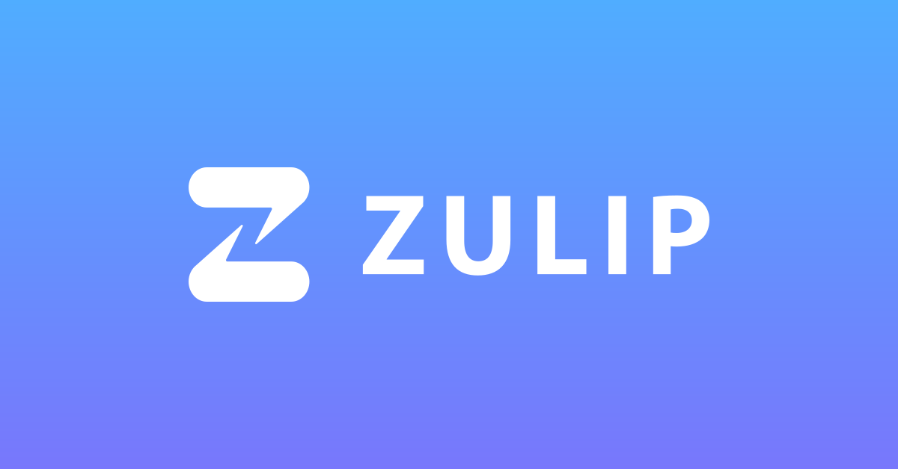

🚀 Oportunidade de Economizar em Ferramentas de Comunicação! 🚀
🚀 Oportunidade de Economizar em Ferramentas de Comunicação! 🚀
Essa ferramenta é TOP!

⚠️ *Primeiro, quero deixar claro: não estou sendo patrocinado por ninguém para falar isso. Eu simplesmente me deparei com uma ferramenta incrível e senti que precisava compartilhar com a comunidade! *⚠️
🔎 Você está sempre em busca ou precisa de maneiras de cortar custos sem comprometer a qualidade? Se Slack, Teams e outros estão pesando no seu bolso, tenho uma dica dourada para você!
Por que considerar o ZULIP Chat? 💡
-
Open Source & Reconhecido: A prova? Mais de 6 mil estrelas no GitHub! 🌟
-
SSO/SAML: Muitas ferramentas open source só disponibilizam isso na versão paga. ZULIP sai na frente, entregando essa funcionalidade na sua versão gratuita.
-
Documentação Completa: Facilita a adoção e resolução de possíveis dúvidas.
-
Múltiplas Integrações: Permite uma sinergia entre diversas outras ferramentas que você possa estar usando.
🤔 Vale lembrar: A economia exata que você pode alcançar depende de múltiplos fatores, como:
-
Tamanho da sua organização 🏢
-
Quantidade de usuários 👥
-
Recursos de hardware 💻
-
E muitos outros…
E enquanto estava testando o ZULIP, me lembrei de uma coisa: O viés de confirmação muitas vezes nos faz apegar a ferramentas populares, mas existem opções menos conhecidas que podem ser igualmente eficazes (ou até melhores). Vale a pena dar uma chance!
E você? Já experimentou o ZULIP ou tem outra ferramenta para recomendar? Vamos trocar ideias! 💬👇
https://github.com/zulip/zulip/
#ZULIPChat #Economia #ComunicaçãoInteligente